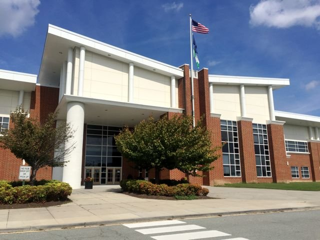

The Center for Information Technology
|
The Center for Information Technology at Deep Run High School is a program that provides its students with unqiue opprotunies to learn and engage with the world of technology in the form of classes, projects, internships and much more. CIT students are provided with a myriad of incredibly useful skills to achieve a sucessful and reawarding career in information technology. The center places students in advanced and rigorous computer science and mathematics courses throughout their time in the center. From the basics of computer sceince in AP CSP to advanced discrete mathematics, the CIT provides a wide range of challening cirriculums for studnets to apply themselves to. The carefully planned sucession of courses have students build on their previous experiences up until they graduate. The CIT created the GRIT conference to further these goals. |  |

|
A student's time at the center will be completely based on the technology they work to understand. In their freshman and sophomore years, most of a students' core classes will be incorporated with the center, with the classes being fully composed of center peers. This structure creates the very warm and community oriented culture the center is known for. This addiontally provides a sharp focus on the center's technoogical cirriculum and the core values of integrity and respect. The skills they build and the connections they make in their early years will bolster a student's ability to suceed in later years, where they branch out in their coursework and pool of peers. The relationsips with center teachers also take center stage, as they provide students with a strong support system in their education. |
|
Students go through many hallmark experiences throughout their time at the center. Social events for underclassmen, allowing students to frorm connections with their peers. In their sophomore year, students create their Consultant of the Week presentation, in whch they become experts on a particular topic in technology and teach a lesson to the class. Students also work on various real world projects within the school, organizng events such as the CIT open house and the hackathon. In their project management class, they learn the SCRUM principles, which they apply in these projects and the CIT projects in the second semester, where they work with the Juniors. Students are provided with an opprotunity to hold and internship within the field of technolgy in their Junior to Senior summer, and can choose to create a capstone projct in their final year in the center. |
Student Accomplishments
CIT Projects
Every year during the second semester, the sophomore and junior students of the CIT particpiate in projects where they are assigned a client in the tech industry to work for over a period of 9 weeks. Students apply the mulitude of technical and soft skills they learned throughout their time in the center with a particular focus on the SCRUM principles. Students gain valuable experience with working in the field of tecnology, gain an opprotunity to fruther their skills, and have an opprotunity to help their community.
Pre Calc Unit Cirlces

Every year students in CIT precalculus classes enrich their exploration of trigonometry through the unit circle art projects. Students are given a choice between an essay about trigonometry or the opprotunity to incorporate the unit circle into any school appropriate peice of art imaginable. Students can excersie great creative freedom while applying the knowledge they gained in class. Above is CIT Junior Vibhav T.'s project.
CIT Open House
Every year the CIT holds an open house for rising freshman tro attend and learn about the CIT from students and teachers. The event is largely student organized, with a team of sophomores in Ms. Norris' IT project management class planning and organzing a large portion of the event as a part of the semester projects for that class. A seperate team produces a promotion video for the event. Students on the open house team organize floor plans, food, volunteers and stations to provide the most positive and informative experience for applicants to the center.
Student Experiences
Ashwin Ajai
CIT students Ashwin Ajai says the center "Has opened up many opprotunities in my education and provided me with rigourous and highly beneficial coursework, which has furthered my skills in the feild of technology and advanvced my education in general."
Srikar Karra
CIT Junior Srikar Karra details his experiences in the center when he says "The CIT has given me and a multitude of others access to many new and exciting opportunities that I wouldn't have access to otherwise. Additionally, I have met had the opprotunity to meet a lot of amazing friends nd collegues."